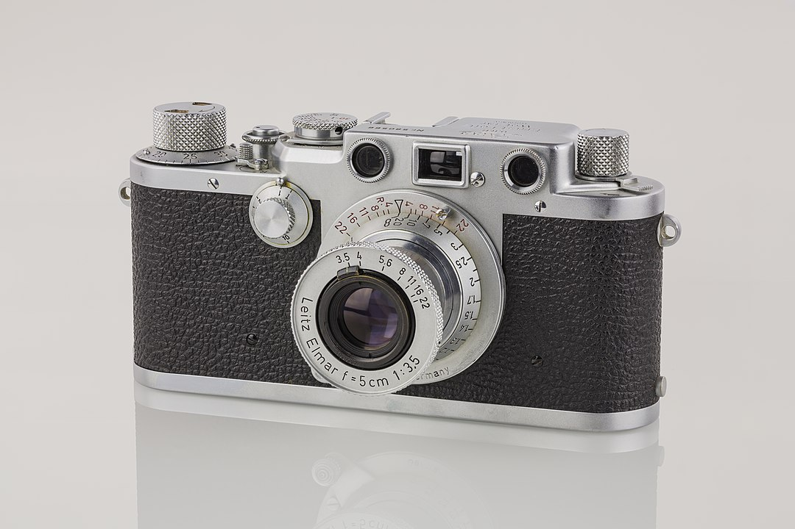

A camera is an optical instrument used to capture and store images or videos, either digitally via an electronic image sensor, or chemically via a light-sensitive material such as photographic film. As a pivotal technology in the fields of photography and videography, cameras have played a significant role in the progression of visual arts, media, entertainment, surveillance, and scientific research. The invention of the camera dates back to the 19th century and has since evolved with advancements in technology, leading to a vast array of types and models in the 21st century.
Coffee is a beverage prepared from roasted coffee beans. Darkly colored, bitter, and slightly acidic, coffee has a stimulating effect on humans, primarily due to its caffeine content. It has the highest sales in the world market for hot drinks.